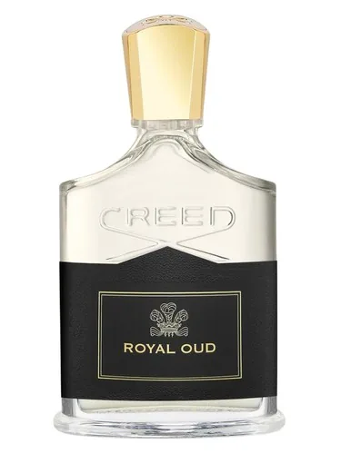

Royal Oud
- Unisex
- Familia amaderada
- Lanzado en 2011
- Ideal para primavera y otoño
Con caja$2,500Te lo conseguimos en 2 días a 1 semanaSin caja$950Te lo conseguimos en 2 días a 1 semana
No disponible: te lo conseguimos en 2 días a 1 semana
Cómo huele
Amaderado
Almizclado
Atalcado
Cítrico
Aromático
Sus notas
Salida
pimienta rosalimónbergamota siciliana
Corazón
cedroangélicagálbano
Fondo
sándaloagalocha (oud)almizcle
Royal Oud de Creed es un perfume amaderado para mujer y hombre, lanzado en 2011. Abre con pimienta rosa y limón, en el corazón tiene cedro y angélica y deja un fondo de sándalo y agalocha (oud). Lo que más se siente: amaderado, almizclado y atalcado.